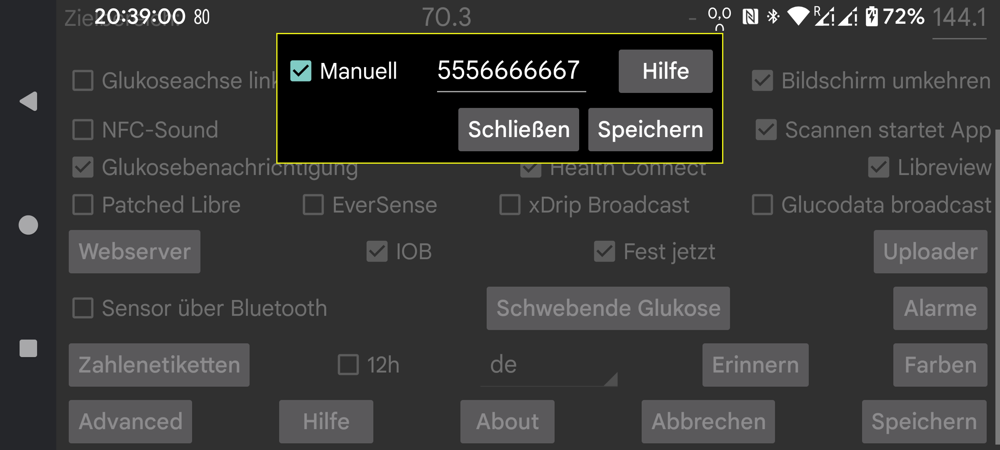

Wie erhalte ich die Libreview-Konto-ID, die zum Scannen eines Freestyle Libre 3-Sensors über NFC erforderlich ist? Wenn Sie „Manuell“ angeben, können Sie die Konto-ID manuell eingeben.
Sie können „Manuell“ auch deaktivieren und auf „Von Libreview“ drücken, um die E-Mail-Adresse und das Passwort Ihres Kontos zu verwenden, um es von Libreview zu erhalten.
Es ist auch möglich, die Libreview-Konto-ID von Libreview zu erhalten und danach „manuell“ einzustellen und die E-Mail-Adresse und das Passwort des Libreview-Kontos zu ändern. Wenn Sie danach „An Libreview senden“ einstellen und auf „Daten erneut senden“ klicken, werden Daten an dieses andere Libreview-Konto gesendet, aber die vorherige Konto-ID wird weiterhin verwendet, um den Sensor über NFC zu scannen. Auf diese Weise sendet Juggluco Daten an ein anderes Libreview-Konto als das, das die Abbotts Libre 3-App verwendet.